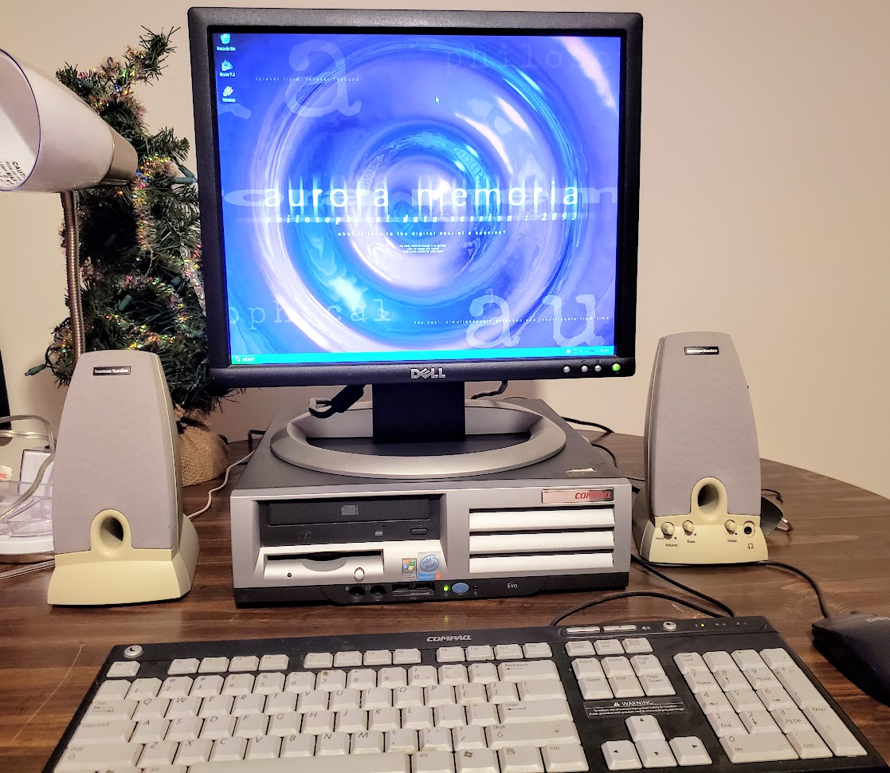

overviewthis adorable little computer was rescued from the hack pile at the local makerspace. the poor thing had just been sitting there for months, so i decided to snag it one day and see what happens if i try to power it on. to my surprise, it booted right up and contained a fresh, clean install of windows xp, complete with office 2007! since getting this computer, i've upgraded it with a much more powerful graphics card and a bunch more RAM. it runs anything i throw at it with aplomb even though it looks deceptively diminutive. i don't have this machine set up at the moment due to space constraints, so i can't write a whole lot about it right now. |

specifications
|